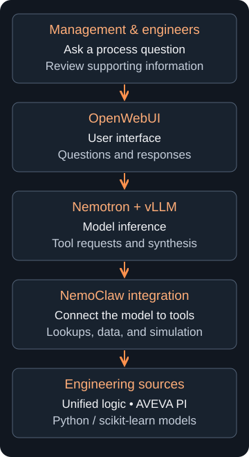
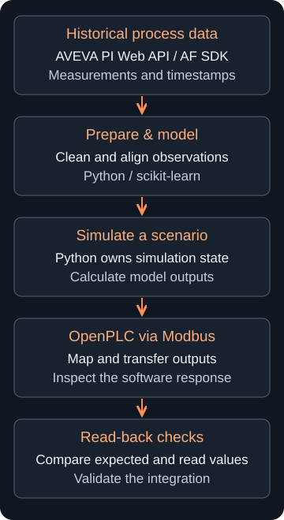

Suzano Packaging · Jun 2026 – Aug 2026
Industrial AI + process controlSuzano Process Control LLM
A deployed engineering assistant used by management and process control teams, connecting searchable control logic with plant data and simulation.
The problem
Control logic, historical measurements, and documentation lived in different systems. Engineers had to piece them together to investigate a problem.
My contribution
I deployed an LLM assistant used by management and process control teams. I combined legacy control logic into a searchable semantic model, connected AVEVA PI data, and built scikit-learn simulation workflows. The stack included vLLM, NVIDIA Nemotron, NemoClaw, and OpenWebUI; I used React to present the work to leadership.
Unified function-block diagrams
AVEVA PI Web API / AF SDK
Python / scikit-learn models
How the assistant works

Checking simulation outputs

Implementation notes
- Keep evidence traceable. Preserve source identity and make ambiguous or missing results explicit.
- Separate observations from predictions. PI supplies process observations; Python owns model state, time, and scenario results. OpenPLC supports output visualization and read-back checks over Modbus.
- Account for missing data. Quality and coverage checks prevent incomplete scans from being presented as complete assessments.
- Keep the interface responsive. Bound expensive background work and expose errors and timeouts.
- Validate each layer. Use synthetic tests, held-out model validation, and read-back checks for different types of correctness.
- Python
- vLLM / Nemotron
- AVEVA PI
- scikit-learn
- React
- OpenWebUI
- Docker
- OpenPLC / Modbus